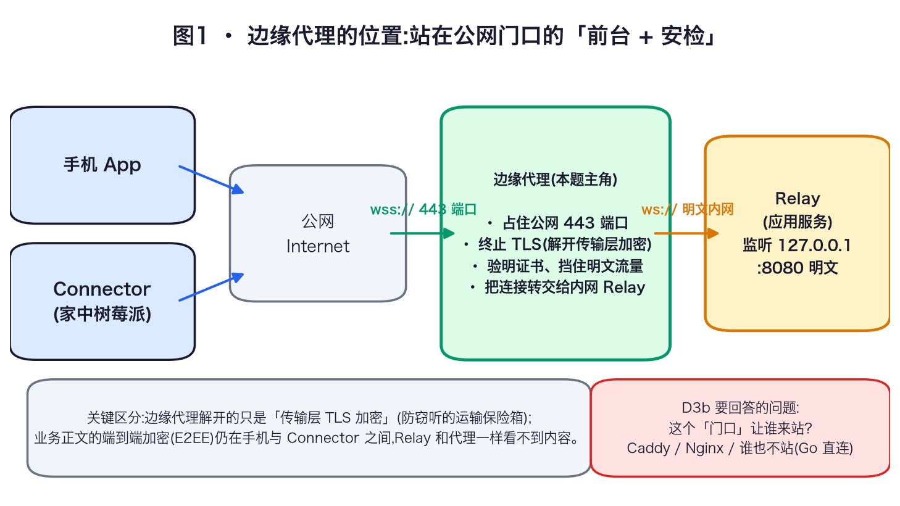
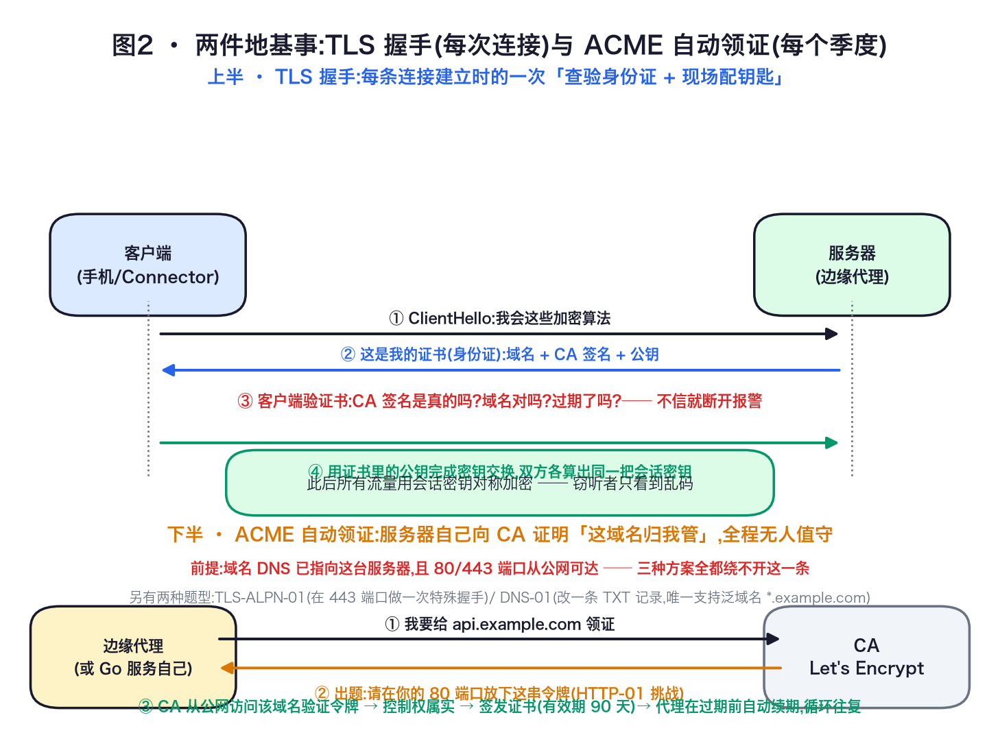
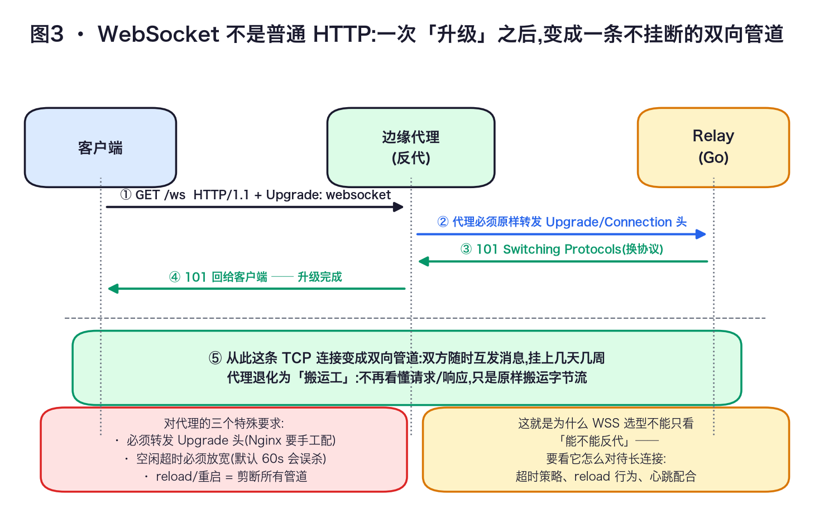
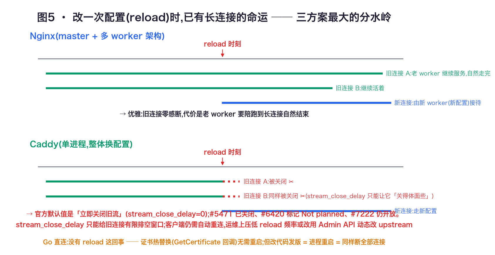
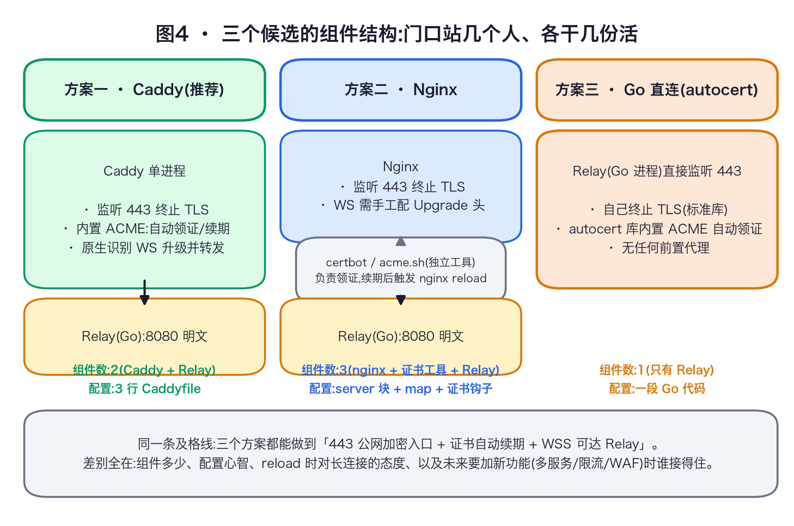
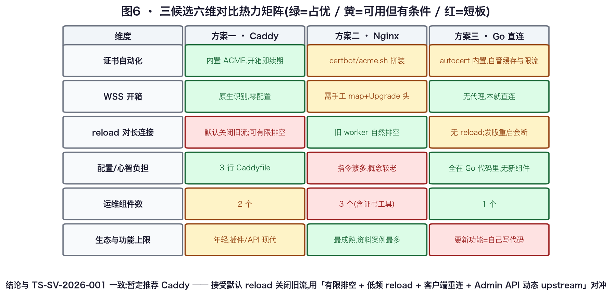

把公网 443 端口、证书自动续期、WebSocket 长连接和 Relay 之间的关系从零讲清。候选：Caddy（暂定推荐）、Nginx、Go 服务直连 TLS（autocert）。这是学习与评估材料，不替项目冻结技术栈。
先用一张图定位角色。“代理解开 TLS”并不等于“代理能读业务正文”：TLS 是运输途中给连接套的锁；如果 Utell 的业务消息仍做端到端加密，业务正文的钥匙只在手机和 Connector 两端。

wss://，内部可以是本机 ws://127.0.0.1:8080；是否允许明文只取决于这段链路是否可信。| 路线 | 一句话 | 主要代价 |
|---|---|---|
| Caddy | 一个轻量前台同时做自动 HTTPS 和原生 WebSocket 反代。 | 默认配置卸载会关闭旧 WebSocket；需要客户端重连和低频/有窗口的 reload 运维。 |
| Nginx | 成熟的通用反向代理；WebSocket 和证书工具分别配置。 | 要手工转发升级头、调长连接超时，并把 certbot/acme.sh 与 reload 串起来。 |
| Go 直连 | Go 进程自己监听 443，用 autocert 申请和续期证书。 | 没有前置代理可替你承担 WAF、配置分发、证书缓存和边界策略；代码进程重启仍会断线。 |
边界：本文不选择手机/Connector 的端到端加密协议，不设计 Relay 的业务路由契约，也不比较云厂商负载均衡；只回答“谁站在公网门口终止 TLS 并把 WSS 交给 Relay”。
TLS（Transport Layer Security，传输层安全）是 HTTPS 和 WSS 中的加密层。客户端连接 relay.example.com:443 时，服务器送出包含域名、公钥和证书颁发机构签名的证书；客户端检查域名、有效期和签名，通过后双方用密钥交换算出本次连接的会话密钥。之后传输内容被加密，旁听者看不到原文。

ACME（Automatic Certificate Management Environment）是证书申请自动化协议。证书机构（CA）不接受一句“域名是我的”，而是发临时挑战，要求申请者从公网证明控制权。成功后签发公开信任的证书，手机无需安装自定义根证书。
| 挑战 | 验证动作 | 端口/前提 | 适合与限制 |
|---|---|---|---|
| HTTP-01 | 在 /.well-known/acme-challenge/ 放令牌文件，CA 从公网读取。 | 只能走 80；DNS A/AAAA 要指向本机。 | 容易自动化；不能签发泛域名；多台机器必须都能回答同一令牌。 |
| TLS-ALPN-01 | 在 443 上进行带特殊 ALPN 值的 TLS 握手。 | 443 必须公网可达。 | 不依赖 80；客户端支持面较窄；不能签发泛域名。 |
| DNS-01 | 在 _acme-challenge 下写 TXT 记录，CA 查询它。 | 需要 DNS 服务商 API 凭据；不要求服务器开端口。 | 唯一支持泛域名；凭据放服务器有额外风险。 |
WebSocket 是建立在 TCP 上的双向消息协议；WSS 就是把 WebSocket 放进 TLS。开场仍像 HTTP：客户端发 GET /ws，带 Upgrade: websocket 和 Connection: Upgrade。服务端返回 101 Switching Protocols 后，HTTP 请求/响应模式结束，双方随时互发消息。

WebSocket 可能几天没有业务消息，但 TCP 连接仍活着。代理若只看到“很久没读到字节”，就会把它当死连接。Nginx 的 proxy_read_timeout 默认 60 秒，计时发生在两次读取之间；应用层 ping/pong 或把超时调大可以避免误杀。教学资料建议 ping/pong 设为 30–60 秒。
reload 是重新加载代理配置，不等于证书续期本身。Nginx 用旧 worker 排空实现优雅 reload；Caddy 默认让旧流立即关闭，也提供 stream_close_delay 给有限排空窗口；Go 直连没有独立代理 reload，代码发版重启进程同样会断。
stream_close_delay 是给旧班留的有限交接窗口。客户端自动重连是必修课。Caddy 是带 HTTPS 自动化能力的 Web 服务器和反向代理。只要配置中出现域名、数据目录可写且持久化，它会向公开 CA 申请证书、在到期前续期，并把 80 重定向到 443。reverse_proxy 原生识别 WebSocket 升级，升级后进入双向隧道，不需手工写 Upgrade 头。
# /etc/caddy/Caddyfile
relay.example.com {
reverse_proxy 127.0.0.1:8080 {
# 可选：reload 后给旧 WSS 五分钟排空窗口
stream_close_delay 5m
}
}上面配置表示：Caddy 占用公网 80/443，外部使用 wss://；Relay 只监听本机 8080。不写 stream_close_delay 时，官方文档默认是“不延迟”，配置卸载会关闭旧流。
官方 reverse_proxy 文档写明：stream_close_delay 会在配置卸载时延迟关闭 WebSocket，默认没有延迟。社区和 GitHub 讨论说明，配置整体替换时旧 handler 不能永久保留；这个参数是“让连接有机会自然结束”，不是永久续命。

| 优点 | 代价 | 适合 |
|---|---|---|
| 自动申请/续期；WSS 原生；配置短；单机轻。 | reload 默认断长连接；复杂路由和插件需验证版本；要理解数据目录和 Admin API。 | 首发单机、少量上游、希望降低证书和反代配置心智负担。 |
stream_close_delay 5m；长连接不要盲目无限延长，否则旧配置占内存。caddy validate --config /etc/caddy/Caddyfile 通过后再 reload。Nginx 官方文档指出，Upgrade 和 Connection 是逐跳请求头，默认不会从客户端传给后端。Nginx 收到后端 101 后才进入隧道模式，所以必须显式告诉后端“客户端想升级协议”。
map $http_upgrade $connection_upgrade {
default upgrade;
'' close;
}
server {
listen 443 ssl;
server_name relay.example.com;
ssl_certificate /etc/letsencrypt/live/relay.example.com/fullchain.pem;
ssl_certificate_key /etc/letsencrypt/live/relay.example.com/privkey.pem;
ssl_protocols TLSv1.2 TLSv1.3;
location /ws {
proxy_pass http://127.0.0.1:8080;
proxy_http_version 1.1;
proxy_set_header Upgrade $http_upgrade;
proxy_set_header Connection $connection_upgrade;
proxy_set_header Host $host;
proxy_set_header X-Forwarded-Proto $scheme;
proxy_read_timeout 1h;
proxy_send_timeout 1h;
}
}显式写 proxy_http_version 1.1 仍是清晰的兼容配置；不依赖某个小版本的默认变化。
Nginx 是 TLS 终止器，但通常不替你完成 ACME 申请/续期。常见组合是 certbot 或 acme.sh，续期后用 deploy hook 检查配置并优雅 reload：
certbot renew --deploy-hook 'nginx -t && nginx -s reload'证书写入路径 → nginx -t 检查 → master 启动新 worker → 旧 worker 继续服务现有连接。若设 worker_shutdown_timeout，到了上限仍未结束的连接会被关闭；不设则反复 reload 可能长期保留旧 worker，吃掉内存。
| 优点 | 代价 | 适合 |
|---|---|---|
| 生态、监控、排障资料成熟；优雅 reload；复杂路由、限流、缓存、负载均衡选择多。 | Upgrade 头、超时、证书工具和 deploy hook 都要自己拼；配置多，错一行就可能 400/502/60 秒断线。 | 已有 Nginx 经验或平台规范；多域名、多上游、需要成熟治理能力。 |
proxy_http_version 1.1 或 Upgrade/Connection，客户端得不到 101。proxy_read_timeout 60s，无心跳的空闲 WSS 一分钟被断。nginx -t。worker_shutdown_timeout。autocert.Manager 负责证书，tls.Config 负责 TLS，应用 handler 负责 WebSocket。组件最少，但边界工程也全部落到代码和进程管理上。manager := &autocert.Manager{
Prompt: autocert.AcceptTOS,
Email: "ops@example.com",
Cache: autocert.DirCache("/var/lib/relay/autocert"),
HostPolicy: autocert.HostWhitelist("relay.example.com"),
}
app := http.HandlerFunc(func(w http.ResponseWriter, r *http.Request) {
// Relay 的 WebSocket handler
})
tlsServer := &http.Server{
Addr: ":443", Handler: app, TLSConfig: manager.TLSConfig(),
}
go http.ListenAndServe(":80", manager.HTTPHandler(nil)) // HTTP-01
log.Fatal(tlsServer.ListenAndServeTLS("", ""))autocert.Manager 是有状态的证书管理器：
DirCache）跨重启复用证书和账户状态；否则容易撞 CA 速率限制。GetCertificate 回调接入 TLS 握手，按域名提供证书。直连没有代理层的 proxy_read_timeout 配置，但必须实现等价策略：ping/pong、最大消息、写缓冲上限、慢消费者断开、连接数上限、访问日志脱敏、限流、健康检查和优雅关闭。证书热替换可以由 GetCertificate 完成，不必因续证重启；代码发版或崩溃恢复仍会断所有 WSS。

| 优点 | 代价 | 适合 |
|---|---|---|
| 只有一个进程；证书和应用状态在同一代码库；部署拓扑简单。 | 自建所有边界能力；进程发版会断线；应用与运维职责耦合；加 WAF/多服务要重新造轮子。 | 单一 Go 服务、极简单机、团队愿意长期维护 TLS/ACME/边界代码。 |

| 维度 | Caddy | Nginx | Go 直连 autocert |
|---|---|---|---|
| 证书申请/续期 | 内置 ACME；域名配置正确即可管理。 | certbot/acme.sh + deploy hook + reload。 | 内置库，但自设 Cache、HostPolicy、端口和日志。 |
| WSS 配置 | reverse_proxy 原生升级。 | 显式 Upgrade/Connection；调 1.1 和超时。 | 应用自己接 WebSocket 和 TLS。 |
| reload 行为 | 默认关闭旧流；延迟参数有限排空。 | 旧 worker 排空，需 shutdown 上限。 | 代码发布/重启会断全部连接。 |
| 组件/故障面 | Caddy + Relay。 | Nginx + Relay + 证书工具链。 | 一个应用进程，边界职责集中。 |
| 复杂路由/多服务 | 可做，需验证插件/API 版本。 | 最成熟。 | 继续在 Go 代码里实现。 |
| 单 Owner 学习成本 | 低；要补 reload 认知。 | 中高；资料多。 | 协议和运维责任集中。 |
在“单机首发、一个 Relay、证书自动续期、单 Owner、希望配置短”的前提下，Caddy 把 ACME 和 WebSocket 升级收进一个组件，心智负担最低。反对理由必须保留：默认 reload 关闭旧 WSS，动态配置仍要验证旧 handler 生命周期。
建议路径：先用 Caddy 做首发 Spike；实现稳定重连和低频 reload；实测 stream_close_delay 的内存/排空；若已有 Nginx 平台或要求更长无损排空，改选 Nginx；若必须只有一个 Go 进程，再评估 Go 直连。
wscat/websocat 连接 wss://relay.example.com/ws，确认 101 和双向收发。openssl s_client -connect relay.example.com:443 -servername relay.example.com
curl -I http://relay.example.com
wscat -c wss://relay.example.com/ws
ss -tnp | grep ':443'
journalctl -u caddy --since '10 min ago'一句话回顾：公网 TLS/WSS 边缘代理是站在 443 门口的前台：用证书证明域名并加密运输，用 ACME 自动领证和续期，把 HTTP 升级成双向管道，再把连接交给内网 Relay。Caddy 把手续打包，代价是默认 reload 关闭旧流；Nginx 把开关摊开，代价是证书和 WebSocket 要自己拼；Go 直连少组件，代价是边界安全、限流和重启影响由 Owner 自担。
官网/规范负责确认机制和默认值；论坛与 issue 负责确认真实运维行为；教学文章用于交叉检查配置坑。